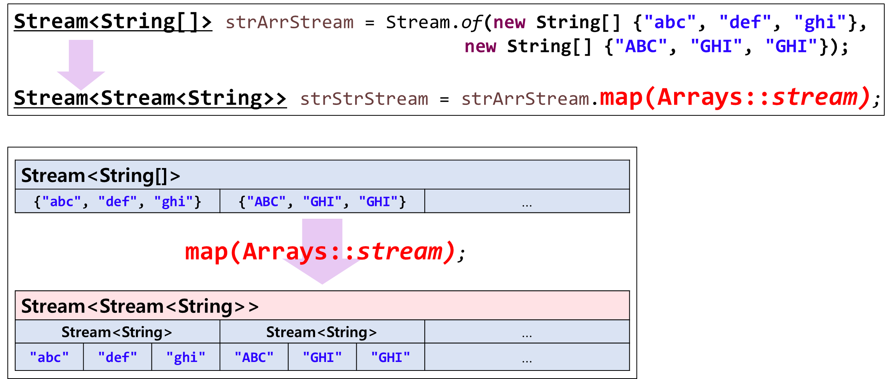
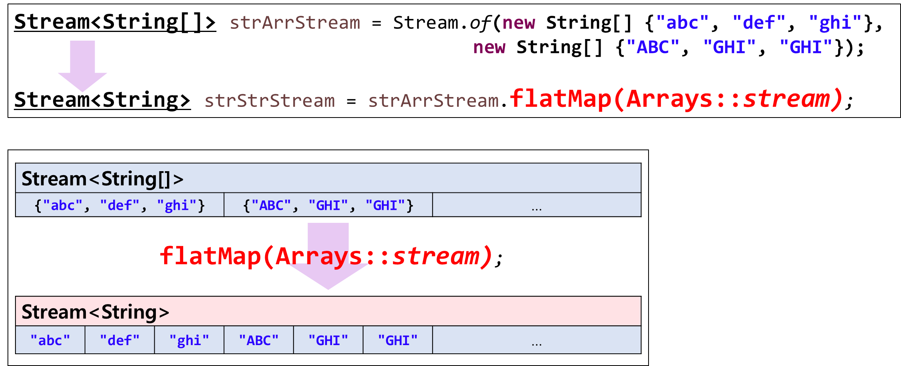

Ch14-30~34. 스트림 중간연산
0. 목차
Chapter14. 람다와 스트림
Ch14 - 30. 스트림의 중간연산 : map()
Ch14 - 31. 스트림의 중간연산 : map() 예제
Ch14 - 32. 스트림의 중간연산 : peek()
Ch14 - 33. 스트림의 중간연산 : flatMap()
Ch14 - 34. 스트림의 중간연산 : flatMap() 예제
Ch14 - 30. 스트림의 중간연산 : map()
▶ map()
▷ 스트림의 요소 변환
Stream<R> map(Function<? super T, ? extends R> mapper) // Stream<T> → Stream<R>
Ch14 - 31. 스트림의 중간연산 : map() 예제
▶ Stream<File> → Stream<String>
▷ Stream<File> 생성
Stream<File> fileStream = Stream.of(new File("Ex1.java"), new File("Ex1"), new File("Ex1.bak"), new File("Ex1.txt"));
▷ Stream<File>에서 File 이름만 추출 → Stream<String> 생성
Stream<String> filenNameStream = fileStream.map(File::getName); // 람다식으로 바꾸면? (f) -> f.getName(String 반환)
fileNameStream
.forEach(System.out::println); // 모든 파일의 이름 출력
// consol
Ex1.java
Ex1.bak
Ex2.java
Ex1 // 확장자가 없는 건 제외
Ex1.txt
Stream<File> -map(File::getName)→ Stream<String>
▷ Stream<File>에서 파일 확장자(대문자)를 중복 없이 추출하기
fileStream.map(File::getName) // Stream<File> → Stream<String>(파일 이름)
.filter(s -> s.indexOf('.')! = -1) // 확장자('.'이 없는 것)가 없는 것은 제외
.map(s -> s.substring(s.indexOf('.') +1)) // Stream<String>(파일 이름 전체) → Stream<String>(파일 이름 중 확장자만)
.map(String::toUpperCase) // Stream<String>(소문자 확장자) → Stream<String>(대문자 확장자)
.distinct() // 중복 제거
.forEach(System.out::print);
// console
JAVABAKTXT
Ch14 - 32. 스트림의 중간연산 : peek()
▶ peek()
▷ 스트림의 요소를 소비하지 않고 엿보기
▷ 중간 작업 결과를 확인할 때 디버깅 용도로 사용
▷ forEach()와 비슷함
peek(): 중간 연산 - 스트림 요소를 소비하지 않음, 말그대로 엿보고 튐
Stream<T> peek(Consumer<? super T> action)forEach(): 최종 연산 - 스트림 요소를 소비함
void forEach(Consumer<? super T> action)
▷ 예시
fileStream.map(File::getName)
.filter(s -> s.indexOf('.')!=-1)
.peek(s -> System.out.printf("fileName : %s%n", s))
.map(s -> s.substring(s.indexOf('.')+1))
.peek(s -> System.out.printf("extensionName : %s%n", s))
.map(String::toUpperCase)
.distinct()
.forEach(System.out::println);
// console
fileName : Ex1.java // peek()
extensionName : java // peek()
JAVA
fileName : Ex1.bak // peek()
extensionName : bak // peek()
BAK
fileName : Ex2.java // peek()
extensionName : java // peek()
fileName : Ex1.txt // peek()
extensionName : txt // peek()
TXT
Ch14 - 33. 스트림의 중간연산 : flatMap()
▶ flatMap()
▷ 스트림의 스트림을 스트림으로 변환
▶ map() vs flatMap()
▷ map()

▷ flatMap()

Ch14 - 34. 스트림의 중간연산 : flatMap() 예제
▶ String[]을 flatMap()으로 출력 : 짧은 문자열
▷ Stream<String[]> 생성
Stream<String[]> strArrStrm = Stream.of(
new String[]{"abc", "def", "jkl"},
new String[]{"ABC", "GHI", "JKL"}
);
▷ flatMap()
Stream<String> strStrm = strArrStrm.flatMap(Arrays::stream);
strStrm.map(String::toLowerCase) // 모든 요소 소문자로 변경
.distinct() // 중복 제거
.sorted() // 정렬
.forEach(System.out::println);
▷ 전체
class Ex14_7 {
public static void main(String[] args) {
Stream<String[]> strArrStrm = Stream.of(
new String[]{"abc", "def", "jkl"},
new String[]{"ABC", "GHI", "JKL"}
);
Stream<String> strStrm = strArrStrm.flatMap(Arrays::stream);
strStrm.map(String::toLowerCase)
.distinct()
.sorted()
.forEach(System.out::println);
System.out.println();
}
}
// console
abc
def
ghi
jkl
▶ String[]을 flatMap()으로 출력 : 긴 문자열 line
▷ lineArr 생성
String[] lineArr = {
"Believe or not It is true",
"Do or do not There is no try",
};
▷ lineArr을 Stream<String>으로 생성
Stream<String> lineStream = Arrays.stream(lineArr);
▷ flatMap()
// " +" = 정규식(Regular Expression) : 하나 이상의 공백, " " : 하나의 공백
lineStream.flatMap(line -> Stream.of(line.split(" +"))) // " +" : 띄어쓰기 두 번 해도 인식 가능 하도록 함, String[] 생성
.map(String::toLowerCase)
.distinct()
.sorted()
.forEach(System.out::println);
System.out.println();
▷ 전체
class Ex14_7 {
public static void main(String[] args) {
String[] lineArr = {
"Believe or not It is true",
"Do or do not There is no try",
};
Stream<String> lineStream = Arrays.stream(lineArr);
lineStream.flatMap(line -> Stream.of(line.split(" +")))
.map(String::toLowerCase)
.distinct()
.sorted()
.forEach(System.out::println);
System.out.println();
}
}
// console
believe
do
is
it
no
not
or // 두 번인데 distinct()가 중복 제거해서 한 번만 출력
there
true
try